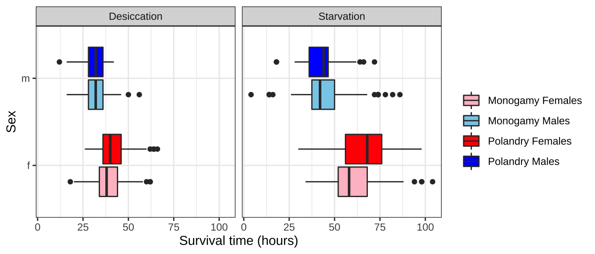
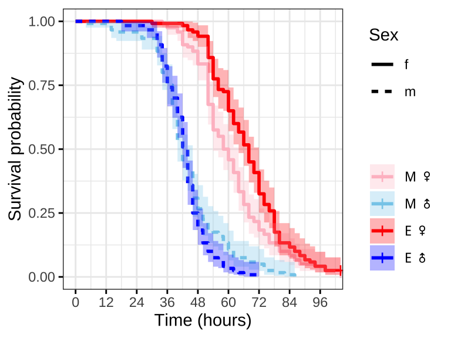

resistance
lukeholman
2020-11-30
Last updated: 2020-12-04
Checks: 6 1
Knit directory: exp_evol_respiration/
This reproducible R Markdown analysis was created with workflowr (version 1.6.2). The Checks tab describes the reproducibility checks that were applied when the results were created. The Past versions tab lists the development history.
The R Markdown file has unstaged changes. To know which version of the R Markdown file created these results, you’ll want to first commit it to the Git repo. If you’re still working on the analysis, you can ignore this warning. When you’re finished, you can run wflow_publish to commit the R Markdown file and build the HTML.
Great job! The global environment was empty. Objects defined in the global environment can affect the analysis in your R Markdown file in unknown ways. For reproduciblity it’s best to always run the code in an empty environment.
The command set.seed(20190703) was run prior to running the code in the R Markdown file. Setting a seed ensures that any results that rely on randomness, e.g. subsampling or permutations, are reproducible.
Great job! Recording the operating system, R version, and package versions is critical for reproducibility.
Nice! There were no cached chunks for this analysis, so you can be confident that you successfully produced the results during this run.
Great job! Using relative paths to the files within your workflowr project makes it easier to run your code on other machines.
Great! You are using Git for version control. Tracking code development and connecting the code version to the results is critical for reproducibility.
The results in this page were generated with repository version 81e095f. See the Past versions tab to see a history of the changes made to the R Markdown and HTML files.
Note that you need to be careful to ensure that all relevant files for the analysis have been committed to Git prior to generating the results (you can use wflow_publish or wflow_git_commit). workflowr only checks the R Markdown file, but you know if there are other scripts or data files that it depends on. Below is the status of the Git repository when the results were generated:
Ignored files:
Ignored: .Rhistory
Ignored: .Rproj.user/
Ignored: analysis/figure/
Ignored: output/.DS_Store
Untracked files:
Untracked: output/des_brm.rds
Untracked: output/sta_brm.rds
Unstaged changes:
Modified: analysis/juvenile_development.Rmd
Modified: analysis/resistance.Rmd
Note that any generated files, e.g. HTML, png, CSS, etc., are not included in this status report because it is ok for generated content to have uncommitted changes.
These are the previous versions of the repository in which changes were made to the R Markdown (analysis/resistance.Rmd) and HTML (docs/resistance.html) files. If you’ve configured a remote Git repository (see ?wflow_git_remote), click on the hyperlinks in the table below to view the files as they were in that past version.
| File | Version | Author | Date | Message |
|---|---|---|---|---|
| Rmd | 8e1e5c1 | Martin Garlovsky | 2020-12-03 | MDG commit again |
| html | 8e1e5c1 | Martin Garlovsky | 2020-12-03 | MDG commit again |
| html | 287d75b | Martin Garlovsky | 2020-12-03 | MDG commit |
| html | 45751bf | Martin Garlovsky | 2020-12-03 | MDG commit |
| Rmd | c175be4 | Martin Garlovsky | 2020-12-03 | MDG commit |
| html | c175be4 | Martin Garlovsky | 2020-12-03 | MDG commit |
| html | df61dde | Martin Garlovsky | 2020-12-03 | MDG commit |
| Rmd | 0714753 | Martin Garlovsky | 2020-12-03 | workflowr::wflow_git_commit(all = T) |
| Rmd | 3fdbcb2 | lukeholman | 2020-11-30 | Tweaks Nov 2020 |
Load packages
library(tidyverse)
library(coxme)
library(lme4)
library(brms)
library(tidybayes)
library(ggridges)
library(kableExtra)
library(knitrhooks) # install with devtools::install_github("nathaneastwood/knitrhooks")
output_max_height() # a knitrhook option
options(stringsAsFactors = FALSE)Load data
# load desiccation resistance data
DesRes <- read.csv("data/3.DesRes.csv") %>%
# add event (all flies died)
mutate(EVENT = 1,
LINE = paste0(Treatment, substr(Replicate, 2, 2)))
# calculate survival times
# paste time and date
DesRes$d <- paste(DesRes$Death_date, DesRes$Death_time, sep = ' ')
# experiment start time
start_timeDes <- "04/02/2017 12:00"
DesRes$survival.time <- as.numeric(strptime(DesRes$d, format = "%d/%m/%Y %H") - strptime(start_timeDes, format = "%d/%m/%Y %H"))
des.surv <- Surv(DesRes$survival.time, DesRes$EVENT)
# load starvation resistance data
StaRes <- read.csv("data/3.StarvRes.csv") %>%
# add event (all flies died)
mutate(EVENT = 1,
LINE = paste0(Treatment, substr(Replicate, 2, 2)))
# calculate survival times
# paste time and date
StaRes$d <- paste(StaRes$Death_date, StaRes$Death_time, sep = ' ')
# experiment start time
start_timeSta <- "04/02/2017 12:00"
StaRes$survival.time <- as.numeric(strptime(StaRes$d, format = "%d/%m/%Y %H") - strptime(start_timeSta, format = "%d/%m/%Y %H"))
sta.surv <- Surv(StaRes$survival.time, StaRes$EVENT)Inspecting the raw data
bind_rows(
DesRes %>%
select(Treatment, Sex, survival.time) %>% mutate(var = 'Desiccation'),
StaRes %>%
select(Treatment, Sex, survival.time) %>% mutate(var = 'Starvation')
) %>%
ggplot(aes(x = survival.time, y = Sex, fill = Treatment)) +
geom_boxplot() +
scale_fill_brewer(palette = 'Set1', direction = -1, name = "") +
labs(x = 'Survival time (hours)') +
facet_wrap(~var, ncol = 2) +
theme_bw() +
theme(legend.position = 'top') +
NULL
Figure 1: Survival time in hours for flies in each treatment split by sex.
Fit the model for desiccation/starvation resistance
Plot the survival curves and median survival times
| Version | Author | Date |
|---|---|---|
| df61dde | Martin Garlovsky | 2020-12-03 |

| Version | Author | Date |
|---|---|---|
| df61dde | Martin Garlovsky | 2020-12-03 |
# median eclosion times
survfit(Surv(survival.time, EVENT) ~ Treatment + Sex, data = DesRes)Call: survfit(formula = Surv(survival.time, EVENT) ~ Treatment + Sex,
data = DesRes)
n events median 0.95LCL 0.95UCL
Treatment=M, Sex=f 108 108 38 38 42
Treatment=M, Sex=m 111 111 32 32 34
Treatment=P, Sex=f 114 114 40 38 42
Treatment=P, Sex=m 105 105 32 32 34
survfit(Surv(survival.time, EVENT) ~ Treatment + Sex, data = StaRes)Call: survfit(formula = Surv(survival.time, EVENT) ~ Treatment + Sex,
data = StaRes)
5 observations deleted due to missingness
n events median 0.95LCL 0.95UCL
Treatment=M, Sex=f 118 118 56 52 60
Treatment=M, Sex=m 120 120 40 38 44
Treatment=P, Sex=f 117 117 66 62 68
Treatment=P, Sex=m 120 120 42 40 42
Next we need to check that the ‘proportional hazards’ assumption is not violated before fitting the full model. 
| Version | Author | Date |
|---|---|---|
| df61dde | Martin Garlovsky | 2020-12-03 |

| Version | Author | Date |
|---|---|---|
| df61dde | Martin Garlovsky | 2020-12-03 |
For both desiccation and starvation we see crossing hazards for the male survival curves. We will therefore fit accelerated failure time (AFT) models with a Weibull distribution and a frailty term to account for replicates within each treatment. We can define the degrees of freedom explicitly
Fit the Accelerated failure time models
weibull.des <- survreg(Surv(survival.time, EVENT) ~ Treatment * Sex + frailty(LINE, df = 6),
data = DesRes, dist = "weibull")
weibull.sta <- survreg(Surv(survival.time, EVENT) ~ Treatment * Sex + frailty(LINE, df = 6),
data = StaRes, dist = "weibull")
bind_rows(anova(weibull.des), anova(weibull.sta)) %>%
cbind(Parameter = c('Null', 'Treatment', 'Sex', '`frailty(LINE)`', 'Treatment x Sex')) %>%
mutate(across(1:5, round, 3)) %>%
select(Parameter, Df, `Resid. Df`, Deviance, `Pr(>Chi)`) %>%
filter(Parameter!='`frailty(LINE)`') %>%
kable() %>%
kable_styling() %>%
kable_styling(full_width = FALSE) %>%
group_rows("Desiccation", 1, 4) %>%
group_rows("Starvation", 5, 8)| Parameter | Df | Resid. Df | Deviance | Pr(>Chi) |
|---|---|---|---|---|
| Desiccation | ||||
| Null | NA | 436.000 | NA | NA |
| Treatment | 1.000 | 435.000 | 3.849 | 0.050 |
| Sex | 1.000 | 434.000 | 154.904 | 0.000 |
| Treatment x Sex | 1.010 | 429.020 | 8.682 | 0.003 |
| Starvation | ||||
| Null | NA | 473.000 | NA | NA |
| Treatment | 1.000 | 472.000 | 2.290 | 0.130 |
| Sex | 1.000 | 471.000 | 208.841 | 0.000 |
| Treatment x Sex | 1.017 | 466.025 | 20.486 | 0.000 |
We see equivocal support for a treatment effect for desiccation resistance and no effect for starvation resistance. For both assays there is support for a sex effect and a treatment x sex interaction.
Calculate hazard ratios
We can use the following equation to translate the AFT coeffiecnts (\(\beta\)) to a hazard ratio (\(\alpha\)): \[ \beta = -\alpha * p \] where \(p\) is the shape (a.k.a. scale) parameter. We can also calculate standard errors… Hazard ratios give the probability of the event occuring compared to ‘control’ in our case compared to Monogamy females. Hazard ratios > 1 indicate increased hazard (i.e. increased probability of event compared to control), hazard ratio < 1 indicate decreased hazard.
# function to get hazard ratios and standard errors
hazR <- function(mod) {
a = c(coefficients(summary(mod)))
coef = (a * -1 * 1/mod$scale)
HazardRatio = exp(coef)
b = summary(mod)$table[, 2]
se = (b * -1 * 1/mod$scale)
HR.se = exp(se)
return(data.frame(round(cbind(HazardRatio, HR.se), 3)[-c(1,5), ]))
}For both desiccation and starvation resistance Polyandrous females live longer than Monogamy females (although not significantly so). Males die sooner than females, and Polyandry males die sooner than Monogamy males.
bind_rows(hazR(weibull.des), hazR(weibull.sta)) %>% as.tibble() %>%
cbind(Parameter = c('Treatment', 'Sex', 'Treatment x Sex')) %>%
select(Parameter, `Hazard ratio` = HazardRatio, `Std. Err.` = HR.se) %>%
kable() %>%
kable_styling() %>%
kable_styling(full_width = FALSE) %>%
group_rows("Desiccation", 1, 3) %>%
group_rows("Starvation", 4, 6)| Parameter | Hazard ratio | Std. Err. |
|---|---|---|
| Desiccation | ||
| Treatment | 0.736 | 0.354 |
| Sex | 2.872 | 0.866 |
| Treatment x Sex | 1.834 | 0.815 |
| Starvation | ||
| Treatment | 0.628 | 0.437 |
| Sex | 3.870 | 0.878 |
| Treatment x Sex | 2.354 | 0.831 |
Fit the brms survival analysis models for desiccation and starvation
if(!file.exists("output/des_brm.rds")){ # if the model doesn't exist fit it, else load it
des_brm <- brm(survival.time | cens(1 - EVENT) ~ Treatment * Sex + (1|LINE),
iter = 5000, chains = 4, cores = 4,
control = list(max_treedepth = 20,
adapt_delta = 0.999),
data = DesRes, family = weibull())
saveRDS(des_brm, "output/des_brm.rds")
} else {
des_brm <- readRDS('output/des_brm.rds')
}
if(!file.exists("output/sta_brm.rds")){ # if the model doesn't exist fit it, else load it
sta_brm <- brm(survival.time | cens(1 - EVENT) ~ Treatment * Sex + (1|LINE),
iter = 5000, chains = 4, cores = 4,
control = list(max_treedepth = 20,
adapt_delta = 0.999),
data = StaRes, family = weibull())
saveRDS(sta_brm, "output/sta_brm.rds")
} else {
sta_brm <- readRDS('output/sta_brm.rds')
}
# function to get hazard ratios and standard errors - needs adapting
hazR <- function(mod) {
a = c(fixef(mod)[, 1])
coef = (a * -1 * 1/summary(mod)$spec_pars[1])
HazardRatio = exp(coef)
b = c(fixef(mod)[, 2])
se = (b * -1 * 1/summary(mod)$spec_pars[1])
HR.se = exp(se)
return(data.frame(round(cbind(HazardRatio, HR.se), 3)[-c(1,5), ]))
}Plot posteriors.
# get posterior predictions
post_des <- posterior_samples(des_brm) %>%
as_tibble() %>%
select(contains("b_"), -contains("Intercept")) %>%
mutate(draw = 1:n()) %>%
pivot_longer(-draw) %>%
mutate(key = str_remove_all(name, "b_"))
post_des %>%
ggplot(aes(value, key, fill = key)) +
geom_vline(xintercept = 0, linetype = 2) +
stat_halfeye(alpha = .8) +
scale_fill_brewer(palette = "Spectral") +
ylab("Model parameter") +
xlab("Hazard ratio???") +
theme_ridges() +
theme(legend.position = "none") +
NULL
Summary of the results of the full model
data.frame(Parameter = rownames(fixef(des_brm)),
fixef(des_brm)) %>%
mutate(star = if_else(sign(Q2.5) == sign(Q97.5), '*', '')) %>%
mutate(Parameter = c('Intercept', 'Polandry', 'Male', 'Polandry x Male')) %>%
kable() %>%
kable_styling() %>%
kable_styling(full_width = FALSE)| Parameter | Estimate | Est.Error | Q2.5 | Q97.5 | star |
|---|---|---|---|---|---|
| Intercept | 3.6699192 | 0.0756023 | 3.5145302 | 3.8194620 |
|
| Polandry | 0.0543559 | 0.1069846 | -0.1511693 | 0.2775755 | |
| Male | -0.1826103 | 0.0251103 | -0.2322193 | -0.1336138 |
|
| Polandry x Male | -0.1044253 | 0.0358179 | -0.1734033 | -0.0343265 |
|
Extract posterior estimates and plot
fitDes <- DesRes %>%
modelr::data_grid(Treatment, Sex, LINE) %>%
add_fitted_draws(des_brm) %>%
sample_frac(size = .5)
fitDes %>%
mutate(Treatment = ifelse(Treatment == "M", "Monogamy", "Polyandry"),
Sex = ifelse(Sex == "f", "Female", "Male")) %>%
ggplot(aes(x = Sex, y = .value, colour = Treatment)) +
#geom_hline(yintercept = 0, linetype = 2) +
stat_pointinterval(position = position_dodge(0.4),
fill = NA, .width = c(0.5, 0.95), alpha = 0.7) +
scale_colour_brewer(palette = 'Set1', direction = -1, name = "") +
labs(y = 'Wing vein IV') +
theme_bw() +
theme(legend.position = 'top',
axis.title.x = element_blank()) +
NULL
sessionInfo()R version 4.0.3 (2020-10-10) Platform: x86_64-apple-darwin17.0 (64-bit) Running under: macOS Mojave 10.14.6 Matrix products: default BLAS: /Library/Frameworks/R.framework/Versions/4.0/Resources/lib/libRblas.dylib LAPACK: /Library/Frameworks/R.framework/Versions/4.0/Resources/lib/libRlapack.dylib locale: [1] en_US.UTF-8/en_US.UTF-8/en_US.UTF-8/C/en_US.UTF-8/en_US.UTF-8 attached base packages: [1] stats graphics grDevices utils datasets methods base other attached packages: [1] knitrhooks_0.0.4 knitr_1.30 kableExtra_1.3.1 ggridges_0.5.2 [5] tidybayes_2.3.1 brms_2.14.4 Rcpp_1.0.5 lme4_1.1-23 [9] Matrix_1.2-18 coxme_2.2-16 bdsmatrix_1.3-4 survival_3.2-7 [13] forcats_0.5.0 stringr_1.4.0 dplyr_1.0.2 purrr_0.3.4 [17] readr_1.4.0 tidyr_1.1.2 tibble_3.0.4 ggplot2_3.3.2 [21] tidyverse_1.3.0 loaded via a namespace (and not attached): [1] readxl_1.3.1 backports_1.1.10 workflowr_1.6.2 [4] plyr_1.8.6 igraph_1.2.6 splines_4.0.3 [7] svUnit_1.0.3 crosstalk_1.1.0.1 rstantools_2.1.1 [10] inline_0.3.16 digest_0.6.25 htmltools_0.5.0 [13] rsconnect_0.8.16 fansi_0.4.1 magrittr_2.0.1 [16] openxlsx_4.2.2 modelr_0.1.8 RcppParallel_5.0.2 [19] matrixStats_0.57.0 xts_0.12.1 prettyunits_1.1.1 [22] colorspace_1.4-1 blob_1.2.1 rvest_0.3.6 [25] ggdist_2.3.0 haven_2.3.1 xfun_0.19 [28] callr_3.5.1 crayon_1.3.4 jsonlite_1.7.1 [31] zoo_1.8-8 glue_1.4.2 survminer_0.4.8 [34] gtable_0.3.0 webshot_0.5.2 V8_3.4.0 [37] distributional_0.2.1 car_3.0-10 pkgbuild_1.1.0 [40] rstan_2.21.2 abind_1.4-5 scales_1.1.1 [43] mvtnorm_1.1-1 DBI_1.1.0 rstatix_0.6.0 [46] miniUI_0.1.1.1 viridisLite_0.3.0 xtable_1.8-4 [49] foreign_0.8-80 km.ci_0.5-2 stats4_4.0.3 [52] StanHeaders_2.21.0-6 DT_0.16 htmlwidgets_1.5.2 [55] httr_1.4.2 threejs_0.3.3 RColorBrewer_1.1-2 [58] arrayhelpers_1.1-0 ellipsis_0.3.1 pkgconfig_2.0.3 [61] loo_2.3.1 farver_2.0.3 dbplyr_1.4.4 [64] labeling_0.3 tidyselect_1.1.0 rlang_0.4.8 [67] reshape2_1.4.4 later_1.1.0.1 munsell_0.5.0 [70] cellranger_1.1.0 tools_4.0.3 cli_2.1.0 [73] generics_0.0.2 broom_0.7.1 evaluate_0.14 [76] fastmap_1.0.1 yaml_2.2.1 processx_3.4.4 [79] fs_1.5.0 zip_2.1.1 survMisc_0.5.5 [82] nlme_3.1-149 whisker_0.4 mime_0.9 [85] projpred_2.0.2 xml2_1.3.2 compiler_4.0.3 [88] bayesplot_1.7.2 shinythemes_1.1.2 rstudioapi_0.11 [91] gamm4_0.2-6 curl_4.3 ggsignif_0.6.0 [94] reprex_0.3.0 statmod_1.4.34 stringi_1.5.3 [97] highr_0.8 ps_1.4.0 Brobdingnag_1.2-6 [100] lattice_0.20-41 nloptr_1.2.2.2 markdown_1.1 [103] KMsurv_0.1-5 shinyjs_2.0.0 vctrs_0.3.4 [106] pillar_1.4.6 lifecycle_0.2.0 bridgesampling_1.0-0 [109] data.table_1.13.0 httpuv_1.5.4 R6_2.4.1 [112] promises_1.1.1 rio_0.5.16 gridExtra_2.3 [115] codetools_0.2-16 boot_1.3-25 colourpicker_1.1.0 [118] MASS_7.3-53 gtools_3.8.2 assertthat_0.2.1 [121] rprojroot_1.3-2 withr_2.3.0 shinystan_2.5.0 [124] mgcv_1.8-33 parallel_4.0.3 hms_0.5.3 [127] grid_4.0.3 coda_0.19-4 minqa_1.2.4 [130] rmarkdown_2.4 carData_3.0-4 ggpubr_0.4.0 [133] git2r_0.27.1 shiny_1.5.0 lubridate_1.7.9 [136] base64enc_0.1-3 dygraphs_1.1.1.6